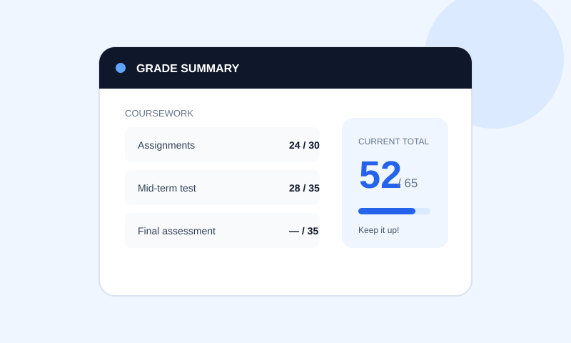
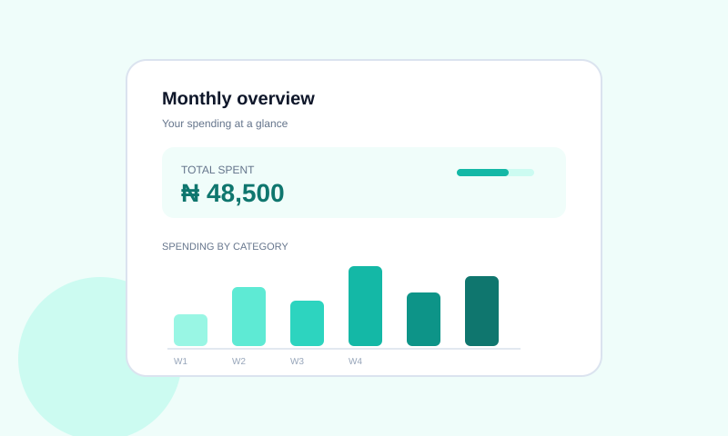
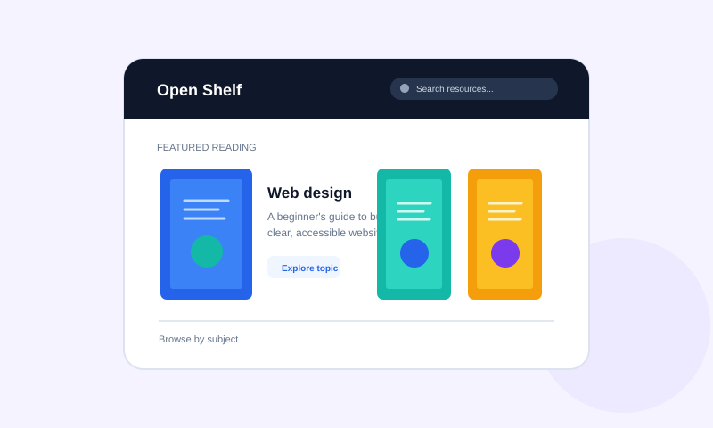

Learning tool01
Student Grade Calculator
A simple concept for entering assessment scores and viewing a clear total or grade summary. It’s designed to make academic progress easier to understand.
- HTML
- CSS
- JavaScript
IDEAS BECOMING INTERFACES
Three sample concepts for practising the web skills I’m learning. Project details are demonstrations; replace or extend them with your own work.

A simple concept for entering assessment scores and viewing a clear total or grade summary. It’s designed to make academic progress easier to understand.

A lightweight interface idea for recording everyday expenses, grouping them into categories, and reviewing a monthly spending overview.

A responsive library concept that helps students browse a small collection of learning resources by subject and find useful reading.
About these examples: These are sample project concepts for an assignment portfolio, not links to deployed applications.